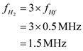
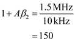
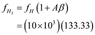

Step 1:
The negative feedback amount is,
The low frequency gain of the dc amplifier,
The  frequency,
frequency,
A pole at  , and all other poles should be well stable.
, and all other poles should be well stable.
The High frequency pole is at
The feedback high frequency pole is at 
Substitute corresponding values.
Step 2:
The gain of the feedback amplifier at the first stage is,
Substitute corresponding values.
Therefore, the feedback gain is,
Step 3:
The feedback factor of the first stage is,
The gain of the subsequent stage is,

Therefore, the frequency is .
Step 4:
Therefore, the negative feedback amount is,

Thus the gain of the feedback amplifier at the second stage is,
Therefore, gain of the feedback amplifier at second state is,
Step 5:
Now the feedback factor of the second stage is,
That implies,
The gain of stage 3 is,
Therefore, the gain of the third stage is,
Step 6:
The negative feedback gain is,
Hence,

Therefore, the frequency is .
This frequency is safe and well above
Step 7:
The feedback factor of the third stage is,
That implies,
Step 8:
The actual  frequency,
frequency,  is,
is,
Therefore, the frequency is
Hence, using a four stage amplifier would allow lower stage gains and higher pole frequencies  .
.